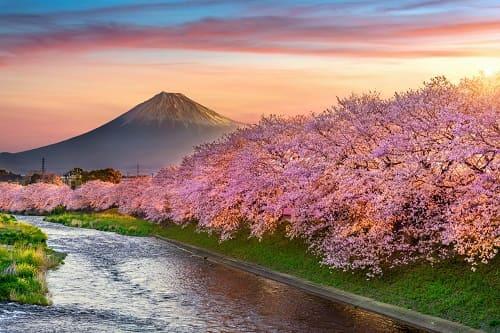

มี 4 ฤดู คือเริ่มจาก ฤดูใบไม้ผลิ ฤดูร้อน ฤดูใบไม้ร่วง และฤดูหนาว ซึ่งแต่ละฤดูก็มีความสวยงาม ความน่ารักอันเป็นเอกลักษณ์ของตนเอง ไม่ว่าท่านจะได้ไปเยือนญี่ปุ่นในช่วงใดก็ตาม ญี่ปุ่นจะสร้างความประทับใจให้ท่านเสมอไม่รู้จาง
ฤดูใบไม้ผลิ (มี.ค. - พ.ค.)
จาก https://www.thairath.co.th/lifestyle/travel/2666750
ฤดูใบไม้ผลิในญี่ปุ่นที่นำพาป่าเขียวขจี ดอกซากุระเบ่งบาน และสภาพอากาศที่สมบูรณ์แบบ
เริ่มต้นในเดือนมีนาคมเรื่อยไปจนถึงเดือนพฤษภาคมเป็นช่วงเวลาแห่งความสดชื่นเบิกบาน ดอกไม้เริ่มผลิแย้ม ใบไม้สีเขียวขจีแตกยอดชูไสว ลมเอื่อย ๆ เริ่มพัดพาเอากลิ่นไอแห่งธรรมชาติ สีสรรแห่งชีวิตเริ่มต้นอีกครั้งหนึ่ง เป็นฤดูที่น่าเที่ยวมากที่สุด โดยเฉพาะช่วงเดือนเมษายนอันเป็นเดือนที่ดอกซากุระบานสะพรั่งทุกแห่งหน จะถูกปกคลุมไป ด้วยสีชมพู และขาว ชาวญี่ปุ่นจะพากันเอาเสื่อมาปูใต้ต้นซากุระ และจิบสาเกพลางชื่นชมความงามของซากุระ เป็นภาพที่ติดตรึง อยู่ ในความทรงจำและประทับใจท่านตลอดไป โดยเฉพาะสวนซากุระที่ ศาลเจ้าเฮย์อันร ซึ่งได้ชื่อว่าเป็นสวนซากุระที่สวยที่ สุดในโลก แต่เป็นที่น่าเสียดายว่า ซากุระนี้จะบานอยู่เพียง 1-2 สัปดาห็เท่านั้นเพื่อป้องกันความผิดหวัง กรุณาสอบถามกำหนดการเดินทางช่วงซากุระบานกับเจ้าหน้าที่ของเราเพื่อประกันความผิดหวัง อุณหภูมิ 12-16 c
ฤดูร้อน (มิ.ย.- ส.ค.)

จาก https://www.into-you.jp/th/events/933
ฤดูร้อนในญี่ปุ่นจะเต็มไปด้วยการแสดงดอกไม้ไฟ เทศกาล
ฤดูร้อนในญี่ปุ่นเริ่มในเดือนมิถุนายนซึ่งก่อนหน้านี้จะฝนตกอยู่ประมาณ 5 อาทิตย์ ทำให้ซากุระร่วงหมด แต่จะกลายเป็นการเริ่มต้นแห่งฤดูปลูกข้าวของชาวนา อากาศจะเริ่มอบอุ่นขึ้นเรื่อย ๆ ฤดูนี้จะเป็นฤดูแห่งความสนุกสนาน เพราะเป็นช่วงที่มีเทศลากประจำปีต่าง ๆ มากมายรวมทั้งการเฉลิมฉลองต่าง ๆ เป็นช่วงแห่งการท่องเที่ยว และตากอากาศตาม สถานที่ท่องเที่ยวต่าง ๆ จนเต็มไปด้วยผู้คนทั้งชาวญี่ปุ่นและชาวต่างชาติ โดยเฉพาะตามสถานที่ตากอากาศ แถบชายทะเล และ ภูเขาเป็นฤดูที่มีอากาศดี ท้องฟ้าสีครามสดใส เหมาะแก่การถ่ายภาพเป็นอย่างยิ่ง สำหรับท่านที่โปรดปรานผลไม้ ในฤดูนี้จะมีผลไม้มากมายให้ท่านลองลิ้มชิมรส นับเป็นฤดูที่น่าท่องเที่ยวมากไม่แพ้ฤดูใบไม้ผลิ
ฤดูใบไม้ร่วง (ก.ย.- พ.ย.)
จาก https://centrip-japan.com/th/article/1155.html
สีสันฤดูใบไม้ร่วงอันงดงาม
ฤดูใบไม้ร่วงในญี่ปุ่นจะเริ่มในราวเดือนกันยายนจนถึงเดือนพฤศจิกายนเป็นช่วงที่มีอากาศดี เพราะหลังจากฤดูร้อนผ่านพ้นไป ลมเย็นเอื่อย ๆ ก็พัดมาแทนที่ เหล่าพฤกษานานาพันธุ์ เริ่มผลัดสีจากเขียวเป็นแดง ส้ม เหลือง แล้วก็พากันร่วงหล่นลงดิน เหลือแต่กิ่งก้านโบกไหวไปตามลมรอวันที่ลมหนาวพัดมาเยือนอย่างท้าทาย ในฤดูนี้นับว่าเป็นฤดูที่มีสีสันมากที่สุดตามภูเขาในป่า สวนสาธารณะจะเต็มไปด้วยสีแดง ส้ม เหลือง และบรรดาพฤกษาผลัดสีทั้งหลายนี้ มีมากมาย หลายพันธุ์ที่พอสลัดใบร่วงหล่นหมดก็จะแตกช่อออกดอก นับเป็นช่วงฤดูกาลที่สวยสดงดงามชวนอภิรมย์ยิ่งนัก และโดยเฉพาะ สำหรับชาวญี่ปุ่นมันเป็นช่วงเวลาแห่งการกีฬา ดนตรี และพักผ่อน อุณหภูมิประมาณ 14-18 c
ฤดูหนาว (ธ.ค.- ก.พ.)
จาก https://yaktour.co/travel-info/20-travel-japan-on-winter
ภูเขาไฟฟูจิทั้งลูกถูกปกคลุมไปด้วยหิมะจนขาวโพลน
ฤดูหนาวของญี่ปุ่นเริ่มต้นในราวเดือนธันวาคมไปจนถึงเดือนกุมภาพันธ์ เป็นช่วงฤดูกาลที่หนาวเย็น ทุกแห่งหนเต็มไปด้วยหิมะปกคลุมขาวโพลนอยู่ทั่วไป โดยเฉพาะในทางภาคเหนือ น้ำในแม่น้ำลำคลอง และทะเลสาป บางแห่งจะกลายเป็นน้ำแข็ง ส่วนบนภูเขาก็จะมีการเล่นสกีกันอย่างสนุกสนาน ในเมืองซัปโปโร ที่เกาะฮอกไกโด จะมีงาน "เทศกาลหิมะ" เฉลิมฉลองกันอย่างเต็มที่ เป็นงาน เทศกาลใหญ่ระดับโลกก็ว่าได้ มีการประกวดการปั้นหิมะ เป็นรูปสถาปัตยกรรม สิ่งก่อสร้างในประเทศต่าง ๆ นอกจากนี้เป็น ช่วงฤดูหนาวแห่งความสุขของครอบครัวอย่างแท้จริง ชาวญี่ปุ่นทุกคนรักฤดูหนาวรักการที่ทุกคนในครอบครัว จะได้มานั่งผิงไฟ รวมกันพูดคุยหยอกล้อเป็นความสุขเล็ก ๆ น้อย ๆ แต่มีค่ามาก เด็ก ๆ ทุกคนต่างพากันรอนับวันสำคัญที่พวกเขาถือว่า เป็นวันที่ดีที่สุดในรอบปี นั่นคือ วันคริสต์มาสและวันปีใหม่ ทุกแห่งหนจะมีการประดับประดาด้วยไฟหลากสีสวยงาม น่าประทับใจยิ่งนัก อุณหภูมิเฉลี่ยประมาณ 1-8 c